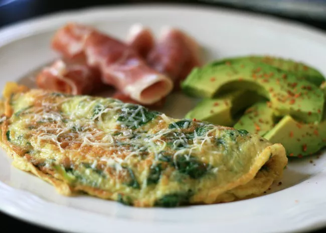

Omelet

Description
A simple omelet
Ingredients
- 1-2 eggs
- Olive oil
- Salt
- Optional: Coriander and/or parsley, chopped into small pieces
Steps
- Break the eggs and beat them with salt
- If you decided to add Coriander/parsley, add them now
- Put a pan on the stove with a bit of olive oil and light the stove to a medium-small fire
- After the oil has heated, put your beaten eggs on the pan
- Once the lower side of the omelet gets cooked, flip it.
- When the omelet is done, move it to a plate